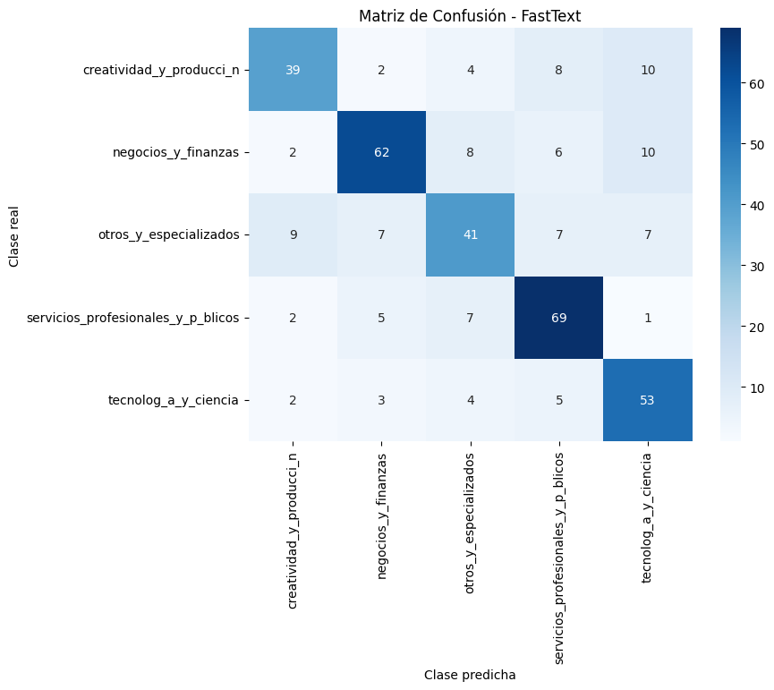
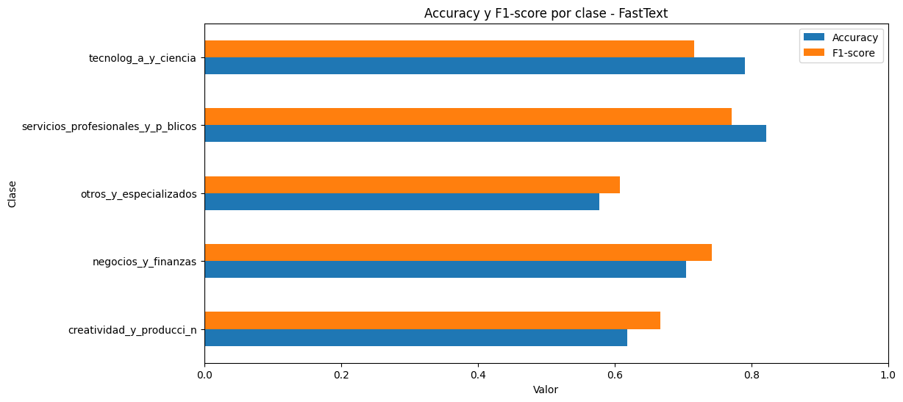

4. FastText#
El modelo FastText, desarrollado por Facebook AI Research, es una extensión del enfoque Word2Vec que descompone las palabras en subpalabras o n-gramas de caracteres. Esto permite capturar información morfológica, volviéndose especialmente útil en textos con vocabulario diverso, errores ortográficos o palabras poco frecuentes.
El modelo recibe como entrada los textos ya normalizados en formato __label__Clase texto, donde cada línea corresponde a un ejemplo de entrenamiento. FastText entrena mediante descenso de gradiente estocástico, ajustando parámetros como la tasa de aprendizaje (lr), el número de épocas (epoch), la dimensión del embedding (dim) y el tamaño del contexto (wordNgrams).
Registros totales: 2483
Número de clases: 5
Train: 1738 | Val: 372 | Test: 373
🔹Modelo#
Show code cell content
# MODULO DATASET
# Archivos FastText
def to_fasttext_format(df, text_col="fasttext_text", label_col="Category"):
return [f"__label__{df.iloc[i][label_col]} {df.iloc[i][text_col]}" for i in range(len(df))]
def exportar_fasttext_archivos(train, val, test, carpeta="data_fasttext"):
os.makedirs(carpeta, exist_ok=True)
with open(os.path.join(carpeta, "train.txt"), "w", encoding="utf-8") as f:
f.write("\n".join(to_fasttext_format(train)))
with open(os.path.join(carpeta, "val.txt"), "w", encoding="utf-8") as f:
f.write("\n".join(to_fasttext_format(val)))
with open(os.path.join(carpeta, "test.txt"), "w", encoding="utf-8") as f:
f.write("\n".join(to_fasttext_format(test)))
exportar_fasttext_archivos(train, val, test)
# MODULO ENTRENAMIENTO
# ------------------------------------------------------
params = {
"lr": 0.5,
"epoch": 20,
"wordNgrams": 2,
"dim": 100,
"loss": "ova", # Perdida (one-vs-all) para clases desbalanceadas
"minCount": 2,
"seed": SEED
}
base_dir = "results/FastText"
os.makedirs(base_dir, exist_ok=True)
model_path = os.path.join(base_dir, "fasttext_model.bin")
start = time.time()
model = fasttext.train_supervised(
input="data_fasttext/train.txt",
**params,
verbose=2
)
print("\n🔹Tiempo de entrenamiento: %.2f minutos" % ((time.time() - start) / 60))
model.save_model(model_path)
🔹Tiempo de entrenamiento: 0.43 minutos
🔹Evaluación de rendimiento#
EVALUACION DEL MODELO
=== HIPERPARAMETROS DEL MODELO ===
lr: 0.5
epoch: 20
wordNgrams: 2
dim: 100
loss: ova
minCount: 2
seed: 42
=== MÉTRICAS EN VALIDACIÓN ===
Accuracy: 0.7823 | F1-macro: 0.7809
=== MÉTRICAS EN TEST ===
Accuracy: 0.7078 | F1-macro: 0.7008
=== CLASSIFICATION REPORT (TEST) ===
precision recall f1-score support
creatividad_y_producci_n 0.72 0.62 0.67 63
negocios_y_finanzas 0.78 0.70 0.74 88
otros_y_especializados 0.64 0.58 0.61 71
servicios_profesionales_y_p_blicos 0.73 0.82 0.77 84
tecnolog_a_y_ciencia 0.65 0.79 0.72 67
accuracy 0.71 373
macro avg 0.71 0.70 0.70 373
weighted avg 0.71 0.71 0.71 373


El modelo FastText con pérdida One-vs-All (OVA), presenta un buen desempeño general, alcanzando un F1-macro de 0.78 en validación y 0.70 en prueba, lo cual indica una ligera pérdida de rendimiento al enfrentarse a datos nuevos.
En el análisis por categorías, se observa que las clases Servicios profesionales y públicos es la que obtiene mejores resultados globales, con pocas equivocaciones al clasificarlo, por eso tiene el recall más alto. Sin embargo, el grupo Otros y especializados tuvo el peor desempeño con un recall de apenas 52%. Esto indica que si bien el modelo tiene un rendimiento moderado, existe un desbalance hacia una clase mayoritaria. En conjunto, los resultados evidencian un modelo es consistente y equilibrado, de rendimiento regular, que prioriza la clasificación de unas clases frente a otras.